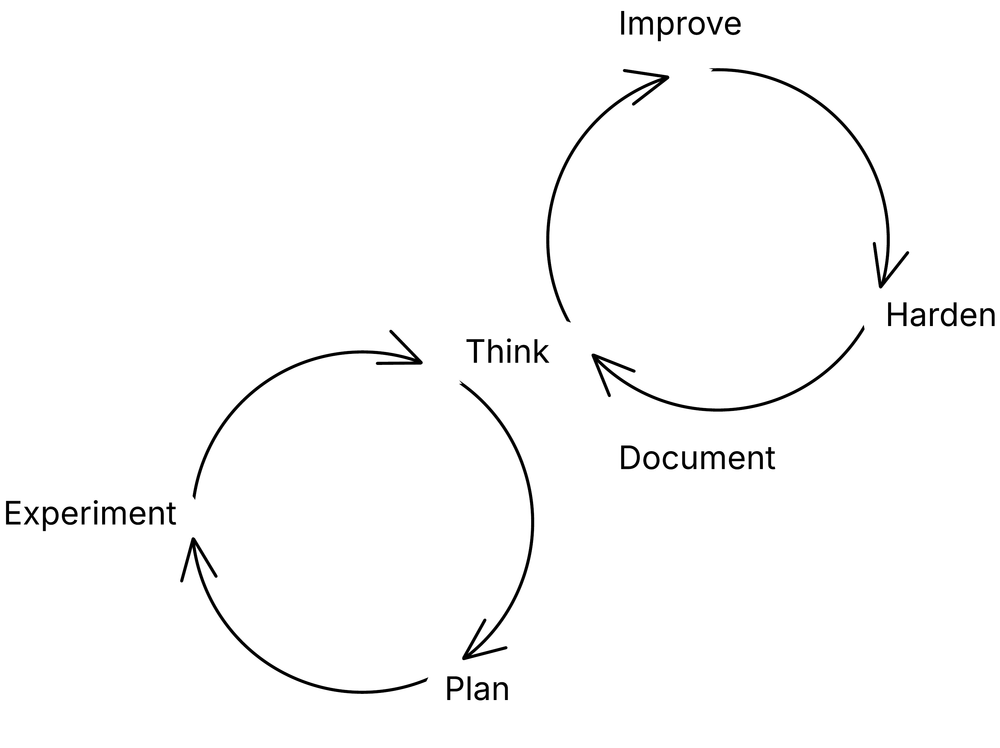

Up until recently, I've only played around with AI in software development with a few experiments around test data and unit tests. In the last months, I've finally dedicated enough time to do a deep dive into using AI agents in coding. Since then I've been building with Claude Code: Agentic workflows for generating frontend component libraries from Figma designs, scripting tools for data mining, and picking up on a few personal projects I'd abandoned because I never had the time.
I have always been and remain an AI sceptic towards people who focus on AI as increasing development speed and productivity, and predict the doom of software engineering as a discipline. Sure, Claude speeds up my development in many areas around trivial and redundant work, but I do not see this as a sign that software engineering is gonna be 10x productivity. For me, speed and productivity is the least interesting part. The real shift wasn't in how fast I build. It was in how AI assists my thinking.1
From my experience, I've landed on a two-phase process: The first phase is exploratory – ideation, first-principles analysis, planning, and experiments. The second phase is an iterative cycle of improving, hardening, and documenting the solution. The former is about figuring out what to build, how and why. The latter is about making the solution more robust for integrating it into production.

For some time, I've wanted to explore generating frontend components based on Figma designs. The designers I work with are brilliant at developing design systems, and I want a way to translate both the design and structure into frontend UI components. With Claude, I started by thinking about what I actually needed.
Ideation. This step happens in my head.2 Likely over months until at some point I start summarizing the idea into a short description and associated thoughts: How would I use Claude Code to build a workflow that can translate Figma design systems into frontend components? What should this workflow look like? What are the inputs and outputs? How do I handle design changes? How do I best extract information from Figma? Should the design govern the structure with atomic design or should the frontend framework be the focus?
First-principles analysis. I use a thinking.md command that helps me question assumptions with the Socratic method. This becomes a full conversation with Claude where we walk through each step of the analysis:
Plan. Based on the analysis and whatever the output is, Claude and I start outlining an implementation plan for the first few approaches. For the Figma component generator, I started with a plan to build components from images and SVG data from Figma components to see where that would take me.
Experiments. Then I start working through code with Claude. This step becomes full of small iterations where I try to address issues on the way:
These experiments were not about implementing the feature in its final form. They were about learning and exploring the limits of Claude. The speed matters here, but not in the way people usually mean. AI lets you run cheap experiments fast, see the problem, build something, see differently. That cycle of seeing-moving-seeing is where the real leverage is.3
Once the exploration phase gives me a working direction – something that runs, produces output, and feels roughly right — I shift into a different mode. This phase is a cycle: improve, harden, document. Repeat.
Improve. The first working version of the
Figma component generator produced components, but the
output was not as I wanted. The Lit components were
cluttered with CSS and the design did not match the Figma
designs. Each round of improvement is a conversation with
Claude about what's not working and why. I learned to mix
focusing on each atom and the context wherein the atom
component lived; I wrote prompts to get Claude to structure
the Lit components appropriately and splitting component
definition from styling
(button.ts → button.style.ts);
I asked Claude to extract shared styles and store these in a
tokens.css and a shared.ts file
etc. This improved the output significantly and I had a
structure and coding style that matched my preference.
Harden. This is a different mindset from improving. Here I step back and ask: where is this fragile? What can we change to ensure consistency in the AI-assisted workflow? This is both about tackling brittleness and uncertainty. This can take many shapes (I will elaborate on this in the future):
For the component generator, that meant adding validation to check whether the generated components actually rendered correctly in Storybook. I turned my loose prompts into skills and rules (analyse Figma nodes → propose components → generate components following Lit component rules etc. → validate finished components up against Figma etc.).
It meant replacing some of Claude's decisions with deterministic scripts — extracting color tokens from Figma doesn't need intelligence, it needs reliability. Hardening is about figuring out which parts of the workflow should leverage AI, which parts should be nailed down, and which parts should be wrapped in tests and QA checkpoints. Not everything in an agentic workflow should stay agentic.
Document. AI moves fast enough that without deliberate documentation, you lose track of what you've built and why. For the component generator, that meant writing a guide for designers on how to structure their Figma files for best results, documenting the workflow steps, and saving example outputs. The form matters — sometimes a README, sometimes a tutorial, sometimes just a set of output examples that show what good looks like.
These three steps aren't a checklist you complete once. Each part of the workflow is improved through iterations. Each time I harden the solution, I discover new things to improve. Each time I document, I notice gaps in the hardening. The cycle continues until the solution is robust enough for production use.
I'm a big fan of trying to extract work patterns and try to formalise them a bit. Not as workflows to follow, but rather as observations on how a specific approach changes how I work. Somewhat similar to how TDD has its own rhythm. Based on my experiences, I think the best way to get the most out of AI-assisted software development is to use the accelerated speed for trying things out and getting feedback, rather than for shipping faster.
The speed that makes people predict 10x productivity is better leveraged for increasing my thinking and exploration speed. AI lets you explore a problem space before committing to a solution. It lets you run cheap experiments to test your assumptions. It lets you have a conversation with the situation — see, move, see again — at a pace that wasn't possible before.
When doing this I effectively push quality concerns downstream (unlike perhaps TDD that put it up front). In the beginning, it felt a bit uneasy to just generate code and worry about the quality later. The second phase let me focus on hardening my approach through improvements, galvanising parts into skills, rules, commands and scripts, adding tests and QA checks, and keep the documentation updated.
If you're building with AI and it feels like you're just coding faster, try slowing down. Spend more time in exploration before you write production code. When you do build, iterate deliberately: improve the output, harden the workflow, document what you've built. Figure out which parts need intelligence and which parts need reliability.
The craft isn't in getting AI to write code for you. It's in knowing when to think and when to build.